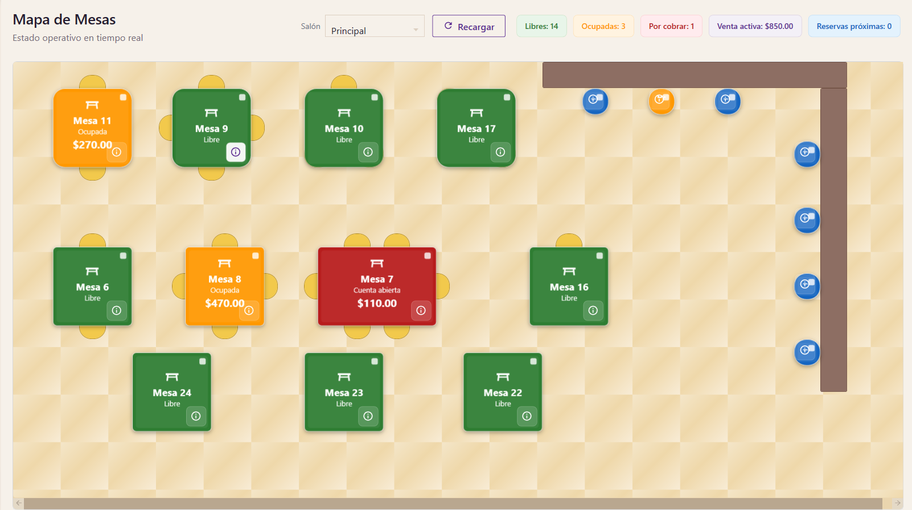
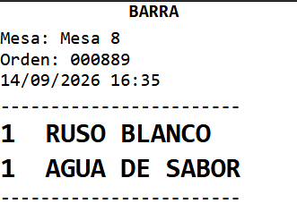

Básico
Para configurarlo a tu ritmo.
$799 MXN
Pago único- POS completo y comandera móvil
- Licencia permanente
- Configuración por tu cuenta
- Guías y documentación
- 3 meses de soporte
- 3 meses de actualizaciones
Punto de venta para restaurantes
De la mesa a cocina y de cocina a caja. Conecta a tu equipo, ordena tus pedidos y cobra con más control.
Desde $799 MXN · Un solo pago. Sin mensualidades.
01 / Un equipo conectado
Explora las pantallas reales de TEKAL y descubre qué cambia en cada parte del servicio.
Productos, cantidades y pedido en una misma pantalla. Evita notas difíciles de leer y órdenes repetidas.
Comandera Android
Las comandas llegan a cocina o barra sin volver a capturarse.

Consulta la cuenta y cobra desde el mismo sistema.



02 / Hecho para el servicio real
Cuando todos trabajan con la misma información, el turno tiene otro ritmo.
Para restaurantes, cafeterías, bares y pedidos para llevar.
03 / Tu siguiente paso
Todos incluyen POS, comandera y licencia permanente. Tú eliges cómo empezar.
Para configurarlo a tu ritmo.
$799 MXN
Pago únicoNosotros te ayudamos a dejarlo listo.
$1,499 MXN
Pago únicoPara una operación con necesidades propias.
$2,299 MXN
Pago únicoBásico: 3 meses de soporte y actualizaciones. Estándar y Premium: soporte y actualizaciones de por vida. Sin renta mensual.
Del primer clic a tu primera venta
Estándar y Premium incluyen configuración completa y carga de tu menú. En Básico, configuras por tu cuenta con guías y 3 meses de soporte.
Hablar por WhatsAppAntes de decidir
Estas son las dudas más frecuentes.
No. Los tres planes incluyen licencia permanente y un solo pago.
Básico incluye configuración por tu cuenta y 3 meses de soporte y actualizaciones. Estándar añade configuración completa, carga de productos y soporte y actualizaciones de por vida. Premium también incluye adaptaciones a tu medida.
Tu licencia sigue siendo permanente. El periodo incluido de soporte y actualizaciones termina; contáctanos para conocer las opciones para continuar con esos servicios.
Una PC Windows con SQL Server Express. La comandera funciona en Android. En soporte y descargas encontrarás los recursos para comenzar.
Sí. Descarga TEKAL y conoce el flujo de pedidos, cocina y caja antes de elegir tu plan.
Sí. TEKAL permite trabajar con mesas, mostrador, barra y pedidos para llevar.
Escríbenos para revisar tu licencia, la reinstalación y la compatibilidad de tus equipos antes de hacer el cambio.
Tu próximo turno puede ser diferente
Conócelo antes de comprar.